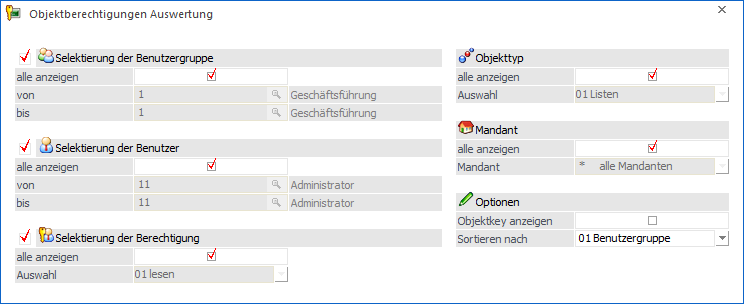
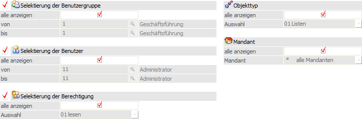
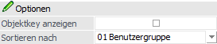

Um Objektberechtigungen gezielt analysieren und auswerten zu können gibt es die "Objektberechtigungen Auswertung" die über
1 WinLine START
1 Optionen
1 Objektberechtigungen
1 Auswertung
aufgerufen werden kann.

Die Auswertung kann sowohl von Benutzern als auch Berechtigungsadministratoren aufgerufen werden.
Selektion

Ø Selektierung der Benutzergruppe
Aktiviert man die Checkbox vor der Überschrift "Selektierung der Benutzergruppe", so werden die Berechtigungen der selektierten Gruppen auf der Auswertung ausgegeben. Hierbei ist darauf zu achten, dass die Berechtigungen zumindest für die Benutzergruppen oder die Benutzer ausgegeben werden müssen. Als Selektion stehen folgende Varianten zur Verfügung:
ü Option "alle anzeigen"
Wird
diese Option aktiviert, so werden die Berechtigungen für alle Benutzergruppen
ausgewertet.
Hinweis
Bei Aktivierung der Option "alle anzeigen" kann keine "von / bis"-Selektion vorgenommen werden.
ü Felder "von / bis"
Es kann eine
Selektion nach bestimmten Benutzergruppen vorgenommen werden.
Ø Selektierung der Benutzer
Aktiviert man die Checkbox vor der Überschrift "Selektierung der Benutzer", so werden die Berechtigungen der selektierten Benutzer auf der Auswertung ausgegeben. Hierbei ist darauf zu achten, dass die Berechtigungen zumindest für die Benutzergruppen oder die Benutzer ausgegeben werden müssen. Als Selektion stehen folgende Varianten zur Verfügung:
ü Option "alle anzeigen"
Wird
diese Option aktiviert, so werden die Berechtigungen für alle Benutzer
ausgewertet.
Hinweis
Bei Aktivierung der Option "alle anzeigen" kann keine "von / bis"-Selektion vorgenommen werden.
ü Felder "von / bis"
Es kann eine
Selektion nach bestimmten Benutzern vorgenommen werden.
Ø Selektierung der Berechtigung
Aktiviert man die Checkbox vor der Überschrift "Selektierung der Berechtigung", dann kann eine Selektion auf die auszuwertenden Berechtigungen vorgenommen werden. Als Selektion stehen folgende Varianten zur Verfügung:
ü Option "alle anzeigen"
Wird
diese Option aktiviert, so werden alle Berechtigungen ausgewertet.
Hinweis
Bei Aktivierung der Option "alle anzeigen" kann keine "Auswahl"-Selektion vorgenommen werden.
ü Felder "Auswahl"
Es kann eine
Selektion nach bestimmten Berechtigungen vorgenommen werden.
Ø Objekttyp
Wird die Checkbox "alle anzeigen" deaktiviert, kann auf einen bestimmten Objekttyp eingeschränkt werden. Ansonsten werden alle Objekttypen in der Auswertung ausgegeben.
Ø Mandant
Wird die Checkbox "alle anzeigen" deaktiviert, kann auf einen bestimmten Mandanten eingeschränkt werden. Ansonsten werden alle Mandanten in der Auswertung ausgegeben.
Optionen

Ø Objektkey
Wird die Checkbox "Objektkey anzeigen" aktiviert, so wird in der Auswertung der jeweilige Objektkey (d.h. z.B. die ID einer WinLine LIST-Liste) angedruckt.
Ø Sortierung nach
Hier kann gewählt werden nach welchem Kriterium die Auswertung sortiert werden soll.
Buttons

Ø Ausgabe Bildschirm
Durch Anwahl des Buttons "Ausgabe Bildschirm" bzw. der Taste F5 wird die Auswertung am Bildschirm ausgegeben.
Ø Ausgabe Drucker
Mittels Button "Ausgabe Drucker" wird die Auswertung am Drucker ausgegeben.
Ø Ende
Durch Anwahl des Buttons "Ende" bzw. der Taste ESC wird das Fenster geschlossen.